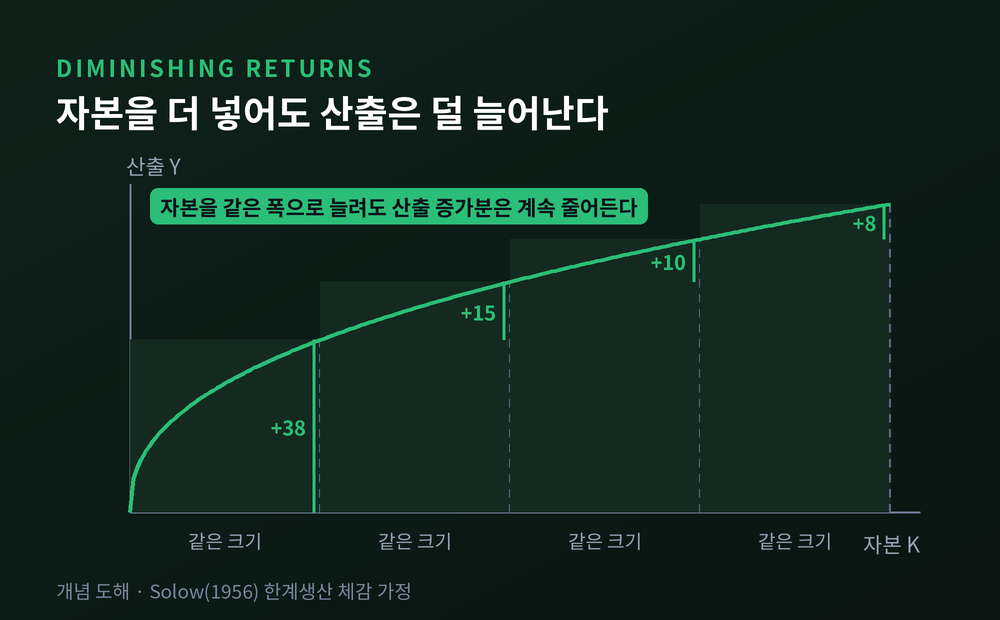
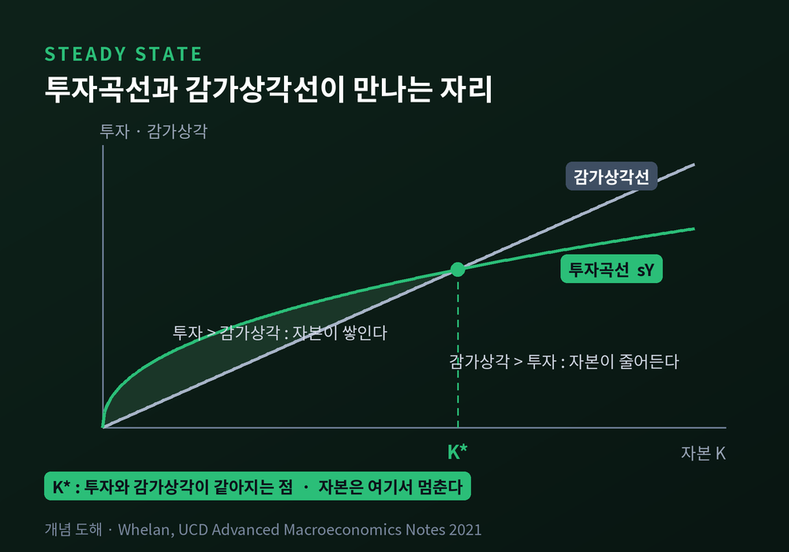
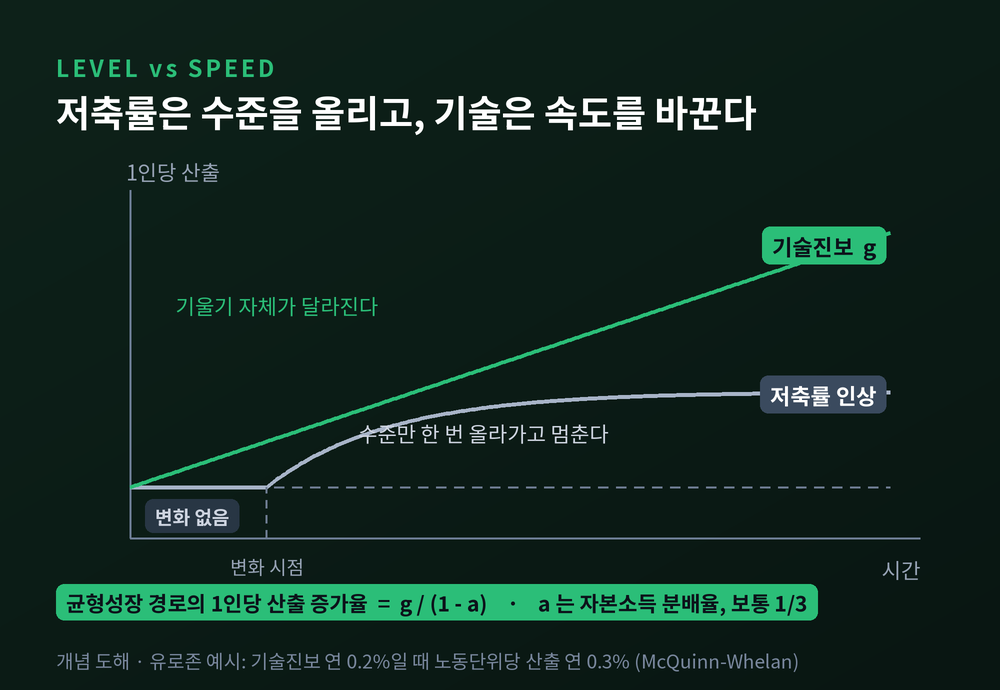
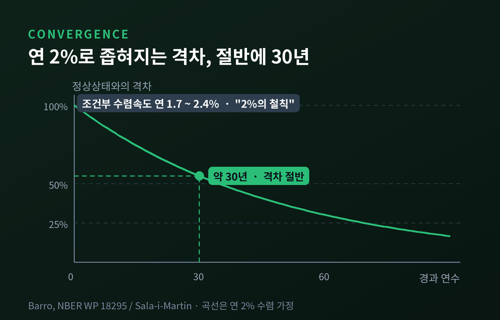
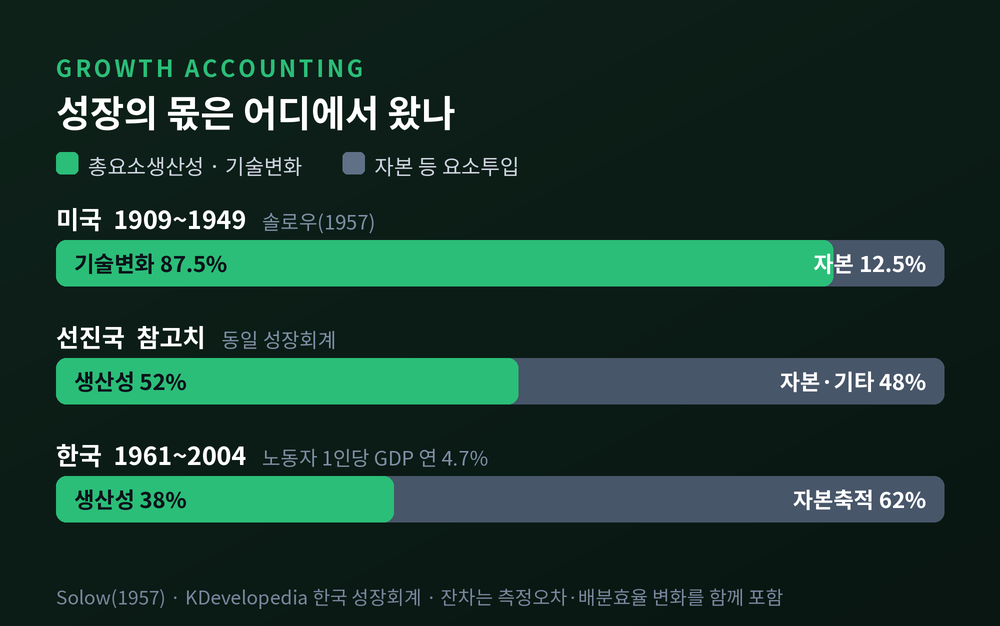
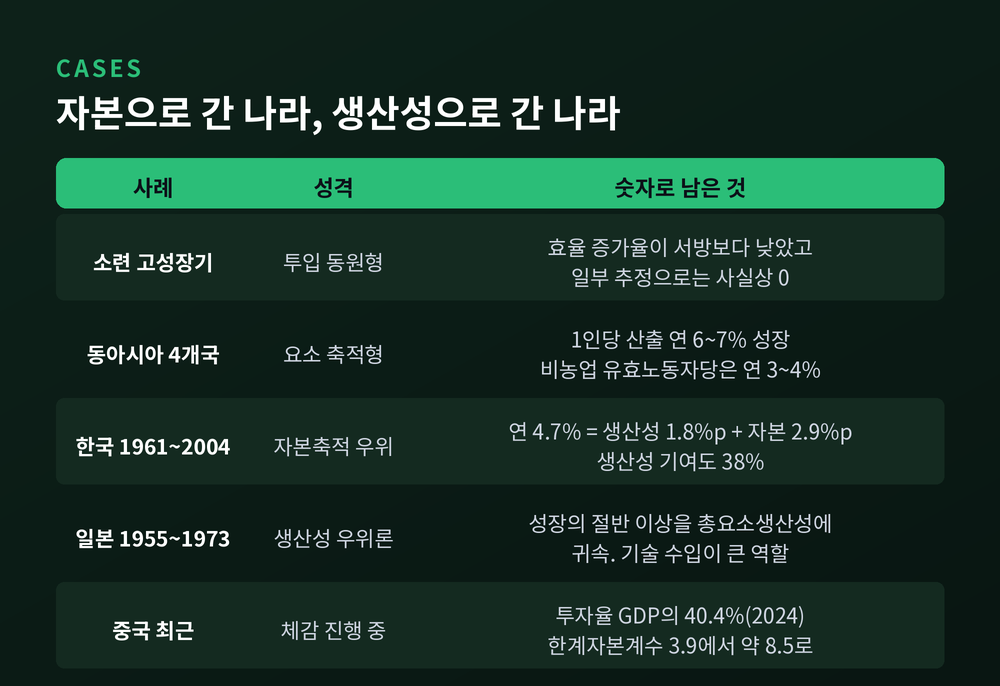

이번 글에서는 솔로우 성장모형을 정리해 보겠습니다. 공장을 계속 짓고 설비를 계속 늘리면 경제도 그만큼 계속 자랄 것 같습니다. 그런데 이 모형의 답은 정반대입니다.
세 줄 요약
로버트 솔로우의 논문은 1956년 「경제성장 이론에 대한 기여」라는 제목으로 나왔습니다. 학술지 『Quarterly Journal of Economics』 70권 1호, 65쪽부터 94쪽까지입니다.
그전까지 성장 논의를 지배하던 것은 해로드–도마 모형이었습니다. 결론이 꽤 비관적이었습니다. 장기에도 경제는 기껏해야 균형성장의 칼날 위에 아슬아슬하게 서 있다는 것이었습니다. 저축률, 자본산출비율, 노동증가율 가운데 어느 하나라도 정중앙에서 조금만 어긋나면 결과는 실업의 누적이거나 만성적 인플레이션이었습니다.
솔로우는 이 결론이 가정 하나에서 나온다는 점을 짚었습니다. 해로드–도마는 자본과 노동이 정해진 비율로만 결합된다고 보았습니다. 자본과 노동이 서로 대체 가능하다고 놓으면 어떻게 될까요. 아주 넓은 범위의 조건에서 완전고용 균형성장 경로가 존재합니다.
칼날은 사라졌습니다. 대신 다른 문제가 남았습니다.
솔로우 성장모형의 생산함수는 단순합니다. 산출 Y는 기술효율 A와 자본 K, 노동 L로 결정됩니다.
여기에 두 가지 가정이 붙습니다. 자본을 늘리면 산출이 늘어난다는 것이 첫째입니다. 그리고 자본을 추가로 넣을수록 늘어나는 산출의 크기가 점점 작아진다는 것이 둘째입니다. 이것을 자본의 한계생산 체감이라고 합니다.
더블린대학의 칼 웰런 교수는 강의노트에서 이렇게 설명합니다. 노동자가 열 명인 회사라면 컴퓨터 열 대는 확실히 도움이 됩니다. 몇 대 더 두는 것도 나쁘지 않습니다. 재택 근무용 노트북, 고장에 대비한 여분 정도는 쓸모가 있습니다.
그런데 사람은 그대로 둔 채 컴퓨터만 계속 쌓으면 어떻게 될까요. 어느 지점부터는 별 도움이 되지 않습니다.
두 번째 가정이 이 모형의 심장입니다.

이제 자본이 어떻게 움직이는지 봅니다. 자본은 투자로 늘고, 감가상각으로 줄어듭니다. 저축률 s는 일정하다고 가정하므로 투자는 산출의 일정 비율입니다.
여기서 그래프 두 개가 등장합니다.
감가상각선은 직선입니다. 자본이 두 배면 닳아 없어지는 양도 두 배입니다. 반면 투자곡선은 점점 눕습니다. 한계생산이 체감하니 자본이 늘어도 산출이 그만큼 늘지 않고, 산출의 일정 비율인 투자도 따라서 완만해집니다.
자본이 적을 때는 투자가 감가상각보다 큽니다. 자본이 쌓입니다. 쌓일수록 투자곡선은 눕고 감가상각선은 같은 기울기로 올라갑니다. 그러다 두 선이 만납니다.
그 자리에서 자본은 더 이상 늘지 않습니다. 새로 투자하는 양이 낡아 없어지는 양을 겨우 메울 뿐입니다. 이 지점이 정상상태이고, 이때 자본산출비율은 저축률을 감가상각률로 나눈 값이 됩니다.
흥미로운 점은 출발점이 어디든 상관없다는 것입니다. 자본이 아주 적어도, 반대로 지나치게 많아도 경제는 같은 자리로 끌려옵니다. 이것을 수렴 동학이라고 부릅니다.

그렇다면 저축률을 올리면 되지 않을까요. 실제로 저축률이 오르면 투자곡선이 위로 이동합니다. 새 교차점은 오른쪽에 생깁니다. 자본도 산출도 늘어납니다.
다만 거기까지입니다. 이동이 끝나면 성장은 다시 멈춥니다. 저축률 인상은 산출의 수준을 한 번 끌어올릴 뿐, 성장의 속도를 바꾸지는 못합니다.
성장을 계속 유지하려면 저축률을 계속 올려야 합니다. 그런데 산출의 100%를 저축할 수는 없습니다. 저축 결정이 민간에 맡겨진 경제라면 한계는 훨씬 일찍 옵니다.
반면 기술효율에는 그런 상한이 있다고 볼 이유가 없습니다.
콥–더글러스 생산함수로 균형성장 경로를 풀면 1인당 산출 증가율은 기술진보율 g를 (1 − α)로 나눈 값이 됩니다. α는 자본소득 분배율이고, 관행적으로 약 3분의 1을 씁니다. 식이 말하는 바는 분명합니다. g가 0이면 1인당 산출의 지속적 성장도 0입니다.
숫자로 보면 더 선명합니다. 맥퀸과 웰런은 유로존 12개국의 기술진보율을 2000년 이후 평균인 연 0.2%로 놓고 계산했습니다. 노동투입 단위당 산출의 정상상태 증가율은 연 0.3%였습니다.

여기서 한 번 더 뒤집는 질문이 나옵니다. 자본은 무조건 많을수록 좋은 것일까요.
에드먼드 펠프스가 1961년에 답을 내놓았습니다. 「축적의 황금률: 성장론자를 위한 우화」라는 논문입니다. 그는 솔로우–스완 모형을 써서 가장 바람직한 장기 저축률을 찾았습니다. 기준은 산출의 극대화가 아니라 1인당 소비의 극대화였습니다.
황금률이라는 이름은 상호성의 윤리에서 왔습니다. 남에게 대접받고자 하는 대로 남을 대접하라는 그 문장입니다. 정상상태에서 저축률이 세대를 넘어 일정하게 유지된다는 점이 그 윤리를 닮았다는 것입니다.
황금률 조건은 이렇게 정리됩니다. 자본의 한계생산이 감가상각률과 인구증가율, 기술진보율의 합과 같아지는 지점입니다.
양 극단을 보면 이유가 분명해집니다. 저축률이 100%면 모든 소득이 투자로 갑니다. 소비는 0입니다. 저축률이 0%면 새 자본이 생기지 않아 산출 0에서만 균형이 성립합니다. 이때도 소비는 0입니다.
황금률을 넘어서는 저축은 자본의 과잉축적을 낳고, 1인당 소비를 오히려 줄입니다. 경제학은 이 상태를 동태적 비효율이라고 부릅니다.
살림을 늘리려다 살림살이가 줄어드는 셈입니다.
모형이 옳다면 자본이 적은 나라는 자본의 한계생산이 높습니다. 같은 투자로 더 큰 산출을 얻습니다. 그러니 가난한 나라가 부유한 나라보다 빠르게 성장해야 합니다. 이것이 수렴 가설입니다.
역사가 잔인한 자연실험을 남겨두었습니다. 2차 대전은 유럽과 일본의 공장, 건물, 도로, 선박을 대규모로 파괴했습니다. 전후 독일과 일본은 승전국인 미국의 두 배, 때로는 세 배 속도로 성장했습니다. 1960년대 후반이 되자 서독과 일본, 프랑스의 노동자 1인당 GDP는 자본스톡이 거의 온전했던 미국에 매우 근접했습니다.
더 극단적인 사례도 있습니다. 에드워드 미겔과 제라르 롤랑은 1960~70년대 미국의 베트남 폭격이 남긴 장기 효과를 조사했습니다. 지역별 폭격 강도는 크게 달랐습니다. 그런데 2002년 시점에서 더 심하게 폭격당한 지역이 상대적으로 더 가난해졌다는 증거는 거의 없었습니다. 경제 전체에 피해가 없었다는 뜻이 아니라, 지역 간 상대적 격차가 메워졌다는 뜻입니다.
속도도 측정되어 있습니다. 자비에르 살라이마틴은 연 2%라는 수렴속도가 자신이 다룬 모든 데이터셋에서 나타나는 실증적 규칙성이라고 주장했습니다. 로버트 배로는 1960년 이후 자료와 1870년 이후 자료를 결합해 조건부 수렴속도가 연 1.7%에서 2.4% 사이에 놓인다고 보고했습니다. '2%의 철칙'이라 불리는 값이 그 구간 안에 들어 있습니다.
연 2%가 무슨 뜻인지 감을 잡아 보겠습니다. 가난한 나라가 자기 도달점까지의 격차를 절반만 좁히는 데 약 30년이 걸립니다. 따라잡기는 일어나지만, 한 세대가 통째로 필요합니다.
여기서 조건부라는 말이 중요합니다. 각 나라의 도달점은 제도의 질이나 인적자본처럼 천천히 변하는 고유 특성에 달려 있습니다. 모두가 같은 자리로 모이는 것이 아닙니다. 각자 자기 자리로 갈 뿐입니다.
맨큐, 로머, 와일은 1992년 논문에서 물적자본에 인적자본까지 넣은 확장 모형이 국가 간 1인당 산출 격차의 약 80%를 설명한다고 보고했습니다. 다만 이 계열의 연구에서 추정된 자본소득 분배율이 약 0.60으로, 미국 데이터 기준 관행값인 3분의 1보다 상당히 높게 나왔다는 점은 오래된 논쟁거리로 남아 있습니다.

이론이 나온 다음 해, 솔로우는 실제 데이터로 계산을 해봤습니다. 1957년 논문 「기술변화와 총생산함수」입니다.
방법은 뺄셈이었습니다. 산출 증가율에서 자본이 기여한 몫과 노동이 기여한 몫을 뺍니다. 남는 것이 기술변화입니다.
결과는 이랬습니다. 1909년부터 1949년까지 미국 비농업 부문에서 노동시간당 총산출이 두 배가 되었는데, 그 증가분의 87.5%가 기술변화에, 12.5%가 자본 사용 증가에 귀속되었습니다.
투입만으로는 설명되지 않는 부분이 8할을 훌쩍 넘었습니다. 이 설명되지 않은 몫을 솔로우 잔차라고 부릅니다.
이름을 곱씹어 볼 만합니다. 잔차는 측정된 것이 아닙니다. 빼고 남은 것입니다. 그래서 여기에는 측정오차, 규모의 경제, 자원배분 효율의 변화, 설비 가동률의 변동 같은 것들이 함께 섞여 들어갑니다. "솔로우 잔차가 정말 기술을 재는가"라는 비판이 오래 이어져 온 이유입니다.
웰런 교수는 다른 각도의 주의도 덧붙입니다. 투자 비중은 일정한데 기술효율이 꾸준히 자라는 나라를 생각해 봅니다. 이 경제는 산출도 자본스톡도 함께 늘어납니다. 성장회계는 "성장의 일정 몫은 자본축적 덕분"이라고 결론 내릴 것입니다. 그러나 자본이 늘어난 것 자체가 기술진보의 결과입니다. 회계는 궁극적 원인을 놓칠 수 있습니다.

이 도구가 실제로 무엇을 밝혀냈는지 보겠습니다.
경제학자들이 성장회계로 소련 경제를 뜯어보기 시작했을 때, 그들은 투입 증가와 효율 증가가 함께 나타나리라 예상했습니다. 실제로 발견한 것은 달랐습니다. 소련의 성장은 투입의 급속한 증가에 기반했고, 그것이 전부였습니다. 효율 증가율은 인상적이지 않았을 뿐 아니라 서방 경제보다도 낮았습니다. 일부 추정에 따르면 사실상 없다시피 했습니다.
폴 크루그먼은 1994년 『Foreign Affairs』에 실은 글에서 이 계산을 아시아로 옮겨 왔습니다. 소련의 강점은 자원을 효율적으로 쓰는 능력이 아니라 동원하는 능력이었고, 투입 주도 성장은 본질적으로 한계가 있는 과정이므로 둔화는 예정된 것이었다는 이야기입니다. 그는 아시아의 고속성장도 같은 성격이라고 보았습니다. 영감이 아니라 땀이라는 표현이 여기서 나왔습니다.
같은 해 앨윈 영은 「숫자의 폭정」이라는 논문으로 홍콩, 싱가포르, 한국, 대만을 분석했습니다. 네 경제 모두 경제활동참가율과 교육수준, 투자율이 빠르게 올랐습니다. 농업에서 제조업으로 대규모 노동 이동이 있었습니다. 1인당 산출은 연 6~7%씩 자랐습니다. 그런데 비농업 부문의 유효노동자 1인당 산출 증가율은 연 3~4%에 그쳤습니다. 투입 증가를 제대로 반영하고 나니 총요소생산성 증가율은 OECD나 라틴아메리카 국가들이 겪은 범위 안이었습니다.
영의 결론은 이렇게 정리됩니다. 동아시아의 산출과 수출 증가는 전례가 없었지만, 총요소생산성 증가는 전례 없는 수준이 아니었다는 것입니다.
한국의 숫자도 남아 있습니다. 1961년부터 2004년까지 노동자 1인당 GDP는 연 4.7% 성장했습니다. 이 가운데 총요소생산성이 1.8%포인트, 노동자 1인당 자본축적이 2.9%포인트를 설명합니다. 총요소생산성의 기여도는 38%입니다. 같은 계산을 선진국에 적용하면 52%가 나옵니다.
다만 여기에는 반대편 견해도 있습니다. 일본 고도성장기(1955~1973)를 다룬 성장회계 연구들은 이 시기 성장의 절반 이상을 총요소생산성에 귀속시킵니다. 높은 수준의 순 기술 수입이 중요한 역할을 했다는 분석입니다. 대상 기간과 부문 구분, 자본 측정 방식에 따라 결과가 갈립니다. 어느 한쪽으로 단정하기는 어렵습니다.
현재 진행형 사례도 있습니다. 중국의 총투자는 2011년 GDP의 47%로 정점을 찍었고 2024년에도 약 40.4% 수준입니다. 그런데 산출 1단위를 더 얻기 위해 필요한 추가 투자량, 즉 한계자본계수는 2000~2007년 약 3.9에서 2008~2019년 사이 4.5에서 7.2로 올랐고, 최근에는 연간 기준 약 8.5까지 왔습니다. 투자율은 세계 최고 수준인데 같은 투자로 얻는 산출은 계속 줄고 있습니다.
교과서의 곡선이 관측 데이터로 눕는 장면입니다.

그렇다면 기술만 믿으면 되는 것일까요. 여기서 솔로우 본인이 남긴 유명한 문장을 짚고 넘어가야 합니다.
1987년 그는 이렇게 썼습니다. "컴퓨터 시대는 어디서나 눈에 띈다. 생산성 통계에서만 빼고." 『뉴욕타임스 북 리뷰』 7월 12일자 36쪽에 실린 서평의 한 대목입니다.
1970~80년대에 정보기술 투자는 막대했습니다. 기술은 약속한 일을 대체로 해냈습니다. 급여 계산, 재고 관리, 회계, 스프레드시트. 그런데 그 이득이 생산성 통계에 뚜렷이 나타나지 않았습니다. 이것을 솔로우 역설이라고 부릅니다.
지금 우리는 인공지능을 두고 비슷한 논의를 반복하고 있습니다. 적어도 단기적으로 그 효과를 데이터에서 특정하기는 어렵다는 평가가 많습니다. 언제 어느 정도로 나타날지에 대해서는 아직 확립된 결론이 없습니다.
통계가 보여주는 현재는 낙관적이지 않습니다. IMF는 2024년 4월 『세계경제전망』에서 총요소생산성 증가의 광범위한 둔화가 성장 둔화분의 절반 이상을 설명한다고 분석했습니다. 배경으로는 기업 간 자본과 노동의 배분 왜곡 심화를 지목했습니다. 2015~2019년 세계 생산성 증가율은 2000~2004년의 3분의 1에 불과했습니다. 5년 후 세계 성장률 전망은 수십 년 만의 최저치인 3.1%, 2030년에는 2.8%로, 역사적 평균 3.8%를 크게 밑돌 것으로 보았습니다.
한국의 사정도 같은 방향입니다. KDI는 잠재성장률이 2025~2030년 1.5%, 2031~2040년 0.7%, 2041~2050년 0.1%로 떨어질 것으로 전망했습니다. 원인으로 혁신 부족과 자원 배분의 비효율로 총요소생산성 기여도가 낮아지는 가운데, 인구구조 변화와 투자 둔화로 노동·자본 투입 기여도까지 함께 줄어드는 상황을 들었습니다.
예전에는 공장을 하나 더 세우는 것이 성장의 답이었습니다. 지금은 같은 공장에서 무엇을 더 잘 만드는가가 답입니다.
정리하면 이렇습니다.
솔로우 성장모형은 자본축적을 폄하하지 않습니다. 자본이 부족한 경제에서 투자는 강력합니다. 전후 독일과 일본이 그것을 보여주었고, 한국의 성장에서도 자본축적은 총요소생산성보다 큰 몫을 차지했습니다.
다만 그 힘에는 끝이 있습니다. 한계생산은 체감하고, 투자곡선은 눕고, 어느 지점에서 감가상각선과 만납니다. 거기서 자본만으로 가는 길은 끊깁니다.
"자본은 수준을 올리고, 기술은 속도를 바꾼다."
이 모형은 완결된 답이 아닙니다. 잔차가 정말 기술인지, 수렴속도와 자본 분배율이 서로 맞는지를 두고 논쟁은 여전히 진행 중입니다. 무엇보다 이 모형은 기술진보가 왜, 어떻게 일어나는지는 설명하지 않습니다. 그저 바깥에서 주어진 것으로 놓을 뿐입니다.
그래도 70년이 지난 지금까지 이 모형을 놓지 못하는 이유가 있다면, 성장에 관한 가장 불편한 질문 하나를 정확히 겨눴기 때문일 것입니다. 무엇을 더 쌓을 것인가가 아니라, 무엇을 더 잘할 것인가.
쌓기는 언젠가 멈춥니다. 나아지는 일에는 아직 끝이 보이지 않습니다.